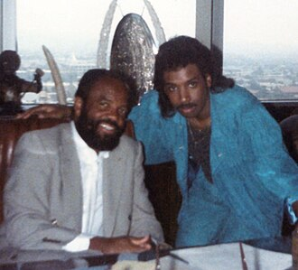

Bobby Nunn
Bobby Nunn is an American R&B music producer, songwriter and vocalist, best known for his top 15 US Billboard R&B chart hit single, "She's Just a Groupie" and for writing and producing the Grammy nominated hit single "Rocket 2U" for The Jets.
Complete Discography & Tracklists (5)